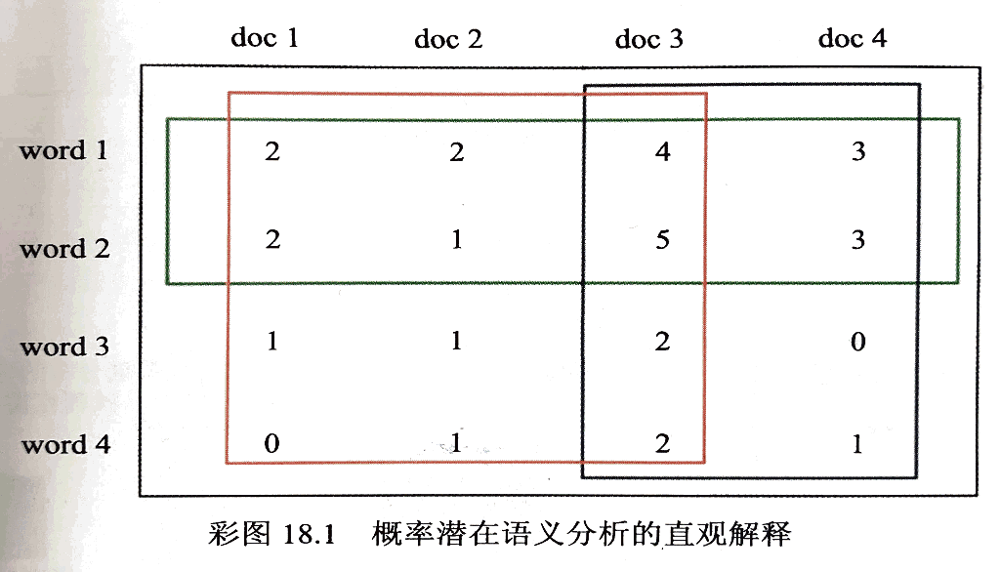
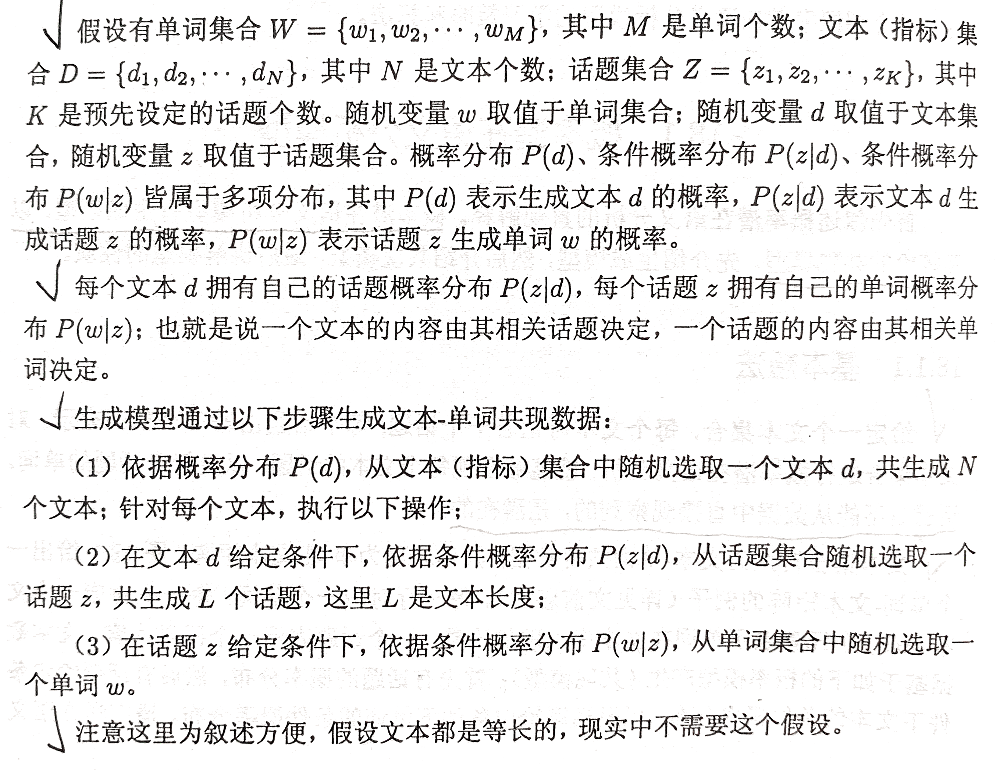
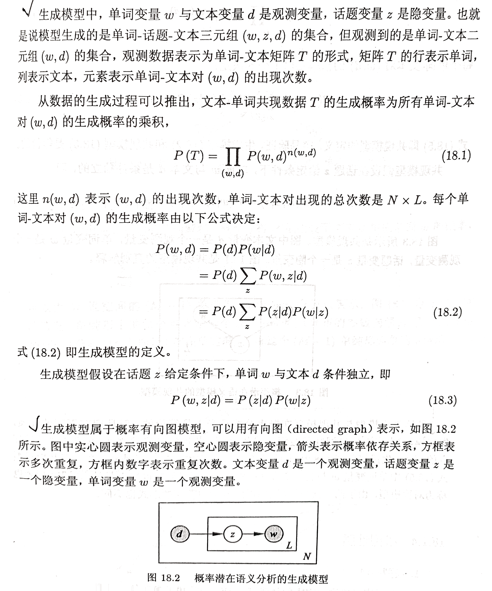

概率潜在语义分析（probabilistic latent semantic analysis, PLSA），也称概率潜在语义索引（probabilistic latent semantic indexing, PLSI），是一种利用概率生成模型对文本集合进行话题分析的无监督学习方法。模型的最大特点是用隐变量表示话题；整个模型表示文本生成话题，话题生成单词，从而得到单词-文本共现数据的过程；假设每个文本由一个话题分布决定，每个话题由一个单词分布决定。
概率潜在语义分析受潜在语义分析的启发，1999年 由 Hofmann 提出，前者基于概率模型，后者基于非概率模型。概率潜在语义分析最初用于文本数据挖掘，后来扩展到其他领域。
概率潜在语义分析模型有生成模型，以及等价的共现模型。
给定一个文本集合，每个文本讨论若干个话题，每个话题由若干个单词表示。对文本集合进行概率潜在语义分析，就能够发现每个文本的话题，以及每个话题的单词。话题是不能从数据中直接观察到的，是潜在的。
文本集合转换为文本-单词共现数据，具体表现为单词-文本矩阵，图16.1 给出一个单词-文本矩阵的例子。每一行对应一个单词，每一列对应一个文本，每一个元素表示单词在文本中出现的次数。一个话题表示一个语义内容。文本数据基于如下的概率模型产生（共现模型）：首先有话题的概率分布，然后有话题给定条件下文本的条件概率分布，以及话题给定条件下单词的条件概率分布。概率潜在语义分析就是发现由隐变量表示的话题，即潜在语义。直观上，语义相近的单词、语义相近的文本会被聚到相同的“软的类别”中，而话题所表示的就是这样的软的类别。假设有 3 个潜在的话题，图中红、绿、蓝框各自表示一个话题。



可以定义与以上生成模型等价的共现模型。
更多内容详见书籍。
虽然生成模型与共现模型在概率公式意义上是等价的，但是拥有不同的性质。生成模型刻画文本-单词共现数据生成的过程，共现模型描述文本-单词共现数据拥有的模式。生成模型式(16.2) 中单词变量 与文本变量 是非对称的，而共现模型(16.5) 中单词变量 与文本变量 是对称的；所以前者也称为非对称模型，后者也称为对称模型。由于两个模型的形式不同，其学习算法的形式也不同。
更多内容详见书籍。
概率潜在语义分析模型是含有隐变量的模型，其学习算法通常使用 EM 算法。
EM 算法是一种迭代算法，每次迭代包括交替的两步：E 步，求期望；M 步，求极大。E 步是计算 Q 函数，即完全数据的对数似然函数对不完全数据的条件分布的期望；M 步是对 Q 函数极大化，更新模型参数。
Q 函数为完全数据的对数似然函数对不完全数据的条件分布的期望。
更多内容详见书籍。